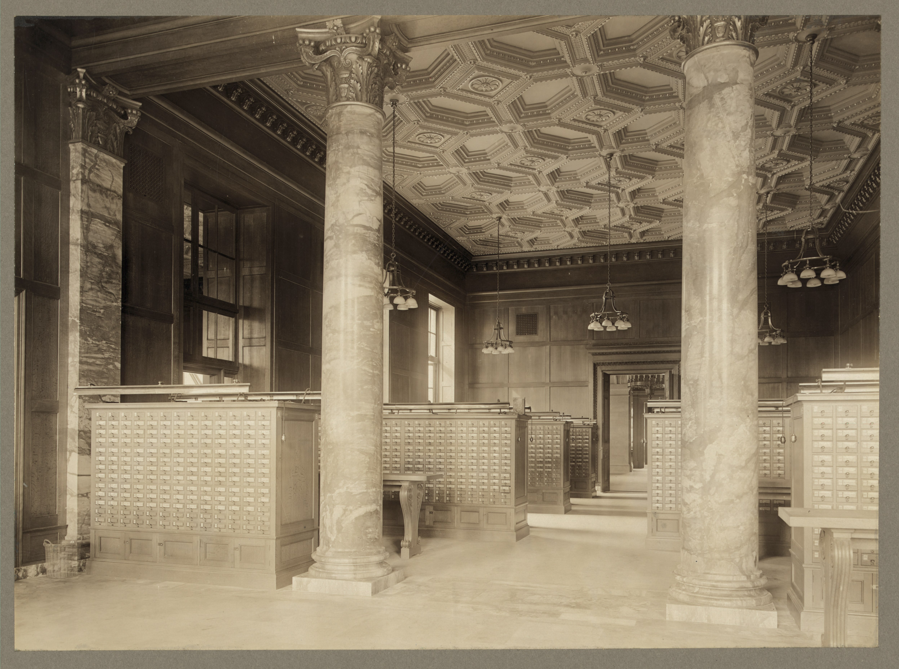

Press Space or click to start projector


A FIG


 THE FIG
THE WASP
THE FIG
THE WASP
SYMBIOSIS
WHAT IF ONE OF THEM IS A COMPUTER?
RESEARCH FILM - SERIES 8B
MAN–COMPUTER
SYMBIOSIS
J. C. R. LICKLIDER — 1960

DAY ONEFORMULATE PROBLEM


RECEIVE OUTPUT
RESULT OF INSPECTIONANOTHER EXPERIMENT
IS REQUIRED
IS REQUIRED
WHAT IS
THE QUESTION?
TWO AIMS
THE QUESTIONBring the machine into the part of a technical problem that is still taking shape.
IN TIMEBring computation into decisions before the situation has moved on.

SUBJECTONE TECHNICAL PERSONOBSERVING HIS OWN WORK
SPRING AND SUMMER1957
WHAT ACTUALLY FILLS THE HOURS
CALLED THINKING?
GETTING INTO
POSITION TO THINK
- SEARCH
- OBTAIN
- CALCULATE
- NORMALIZE
- PLOT
- TRANSFORM
- TEST CONSEQUENCES
85%
OF MY THINKING TIME
WAS SPENT GETTING INTO POSITION TO THINK.
HOW WELL CAN PEOPLE
UNDERSTAND SPEECH?
SAME UNDERLYING QUESTION.
SIX DIFFERENT WAYS OF MEASURING IT.
01 - CONVERT02 - NORMALIZE03 - CALCULATE04 - PLOT
RUNRAW MEASURECOMMON dBCHECK
ARMS 0.25-12.04OK
BLOG -0.60-12.00OK
CN/S 3.98-12.00OK
DM-S 12.0-12.00OK
EAI 0.18-11.86OK
FPK-AVG -11.7-11.70OK
ELAPSED CLERICAL OPERATIONS0000
SEVERAL HOURS LATER
THE MACHINE DID NOT
HAVE THE INSIGHT.
IT GOT US TO THE PLACE
WHERE INSIGHT COULD HAPPEN.
INTRODUCING
SYMBIOTE™
ELECTRONIC RESEARCH COMPANION

CALCULATESSIMULATESPLOTSRECONSIDERS
TESTED FOR USE WITH
UNFORMULATED PROBLEMS
CATALOG FILM S-14 - PRODUCT CONCEPT RECONSTRUCTION
UNFORMULATED PROBLEMS
THE DIVISION OF WORK
ONE READABLE LOOPHUMAN
SETS
- GOALS
- HYPOTHESES
- CRITERIA
- EVALUATION
DESIGNATE WHAT MATTERS→
MACHINE
PREPARES
- RETRIEVE
- NORMALIZE
- TRANSFORM
- SIMULATE
- PLOT
- COMPARE
←EVIDENCE - ANOMALY - ALTERNATIVE VIEW
SHOW ME
SEVERAL
CUTS.
OUTPUT CHANNEL 3ALTERNATIVES WILL BE ATTEMPTED
UNREQUESTED
RELATION
ILLUSTRATIVE OUTPUT - NO HISTORICAL DATA SHOWN
RELATION
CHANGE OVERREEL I - END
REEL II
THE IMPOSSIBLE
MACHINE
THE CONDITIONS FOR CLOSE PARTNERSHIP
LICKLIDER'S THINKING CENTERLIBRARY
RETRIEVAL
COMPUTATIONCONNECTED, TIME-SHARED, AVAILABLE AT THE MOMENT OF THOUGHT.
RETRIEVAL
COMPUTATIONCONNECTED, TIME-SHARED, AVAILABLE AT THE MOMENT OF THOUGHT.
BOOKS REMAIN. THE SYSTEM HELPS FIND, DELIVER, AND RETURN THEM.

MEMORY IS NOT ONLY ELECTRONIC.PUBLISHED KNOWLEDGE
IS DURABLE MEMORY.
IS DURABLE MEMORY.
- FIND
- DELIVER
- RETURN

FIND WHAT YOU KNOW
AND WHAT YOU DO NOT YET KNOW
KNOWN NAMEMATRIX MULTIPLICATION→
KNOWN PATTERNRELATIONS LIKE THIS ONE→
RETURNED FOR INSPECTION
- DEFINITION
- EXAMPLE
- RELATED METHOD
- ALTERNATIVE STRUCTURE
INSTRUCTION TO A HUMANGOAL
CRITERIONMAKE THE IMPORTANT THING EXPLICIT.
CRITERIONMAKE THE IMPORTANT THING EXPLICIT.
INSTRUCTION TO A CONVENTIONAL COMPUTERCOURSE
COURSE
COURSEEVERY ROUTE FORESEEN IN ADVANCE.
COURSE
COURSEEVERY ROUTE FORESEEN IN ADVANCE.
AN UNFORESEEN ALTERNATIVE STOPS THE PROCESS.

ROUGH HAND
RECOGNIZED STRUCTURE
PRECISE AND EDITABLEONE SHARED WORK SURFACE

SPEAK. SEE IT.
HEAR IT BACK.
LIVE TRANSCRIPTYour words can appear here.
Microphone permission is requested only when RECORD is pressed.
NOW FEEL FAMILIAR.
TIME SHARINGMEMORYORGANIZATIONLANGUAGEINPUT / OUTPUT
THE EQUIPMENT DOES NOT CREATE THE PARTNERSHIP.
THE WAY WE WORK TOGETHER DOES.
THE ACTUAL
STRANGE IDEA
EXTENSIONTHE MACHINE AMPLIFIES A HUMAN ACT.
REMAINDERTHE PERSON HANDLES WHAT AUTOMATION COULD NOT.
PARTNERSHIPDIFFERENT CAPABILITIES WORK IN CONTINUOUS EXCHANGE.
WHAT IS THE RELATION?
Select the relationship that most closely describes your current work.
QUESTION→ANSWER
WHAT RETURNS TO JUDGMENTEVIDENCEANOMALYALTERNATIVE
THE DIVISION OF WORK
PEOPLE
SET THE
- GOALS
- HYPOTHESES
- CRITERIA
- EVALUATIONS
COMPUTERS
DO THE
- ROUTINIZABLE WORK
- THAT PREPARES
- INSIGHT
- AND DECISION
RESEARCH FILM ARCHIVEEND OF
REEL II · COMPLETE
END OF
PICTURE
REEL II · COMPLETEWITH THE PARTICIPATION OFFIGS
BOTANICAL AND ENTOMOLOGICAL DIVISIONS
FIGS
AND WASPS
BOTANICAL AND ENTOMOLOGICAL DIVISIONSTEXT AFTERJ. C. R.
J. C. R.
LICKLIDER
WITH VARIOUS ELECTRONIC MACHINES
IRE TRANSACTIONS - MARCH 1960ANDTHE
PARTICIPATING AS ITSELF
THE
AUDIENCE
PARTICIPATING AS ITSELFARCHIVE CONTROL - SERIES 8BPLEASE RETURN THIS FILM
REWIND - INSPECT - FILE